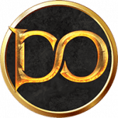
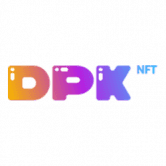
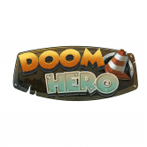

DogX DeFi DogX DeFi 在币安智能链（BSC）上提供四种产品： DogX Swap & Liquidity：是我们易于使用的交换协议，其设计灵感来自著名的基于 AMM 的交换协议，例如 Pancake S
Doki Doki DeGacha 是一个独一无二的 NFT 平台，它将令人上瘾的 Gachapon 机器与数字艺术、收藏品和 DeFi 质押相结合，创造难忘的体验！ Gachapon (ガチャポン) 是日本的一种文化现象，各个年
DokiDoki Finance 我们的合约代码不是 sushi/yfi/curve 的一个分支。所有合约都是从头开始开发的。 我们的网站和产品视觉设计也是独一无二的——仅为 Doki Doki Finance 创建，而不是从其他来源抄袭。
Dolce&Gabbana: DGFamily Glass Box DGFamily 玻璃盒可在未来几周在 UNXD 上访问的链上展示中兑换成分层 DGFamily 盒。 DGFamily Boxes 是打开 Dolce&Gabbana NFT 世界的钥匙——一个由典型的意大利奢侈品牌直接与 UNXD 合作的数字、物理和体
Doll.Finance DollSwap 从 PancakeSwap 和 Yield Farming 分叉，运行在币安智能链上的 Staking 平台。 DollSwap 由 DeFi Dolls 为 DeFi Dolls 构建。我们拥有一支由经验丰富的 Dolls 组成的专门团队，他们已经在加密领域工作了多年。 $DOLL
Dollar Divs BTT DVC Exchange 注意：此处不会显示 BTT 合约价值和交易量。 什么是美元除法？ Dollar Divs 是一个在 TRON (TRX) 和 BitTorrent (BTT) 网络上提供游戏的平台。这些是您必须放入 TRON 或 BitTorrent 的游戏。这种加密货币
DollarFuture Dollarfuture 是一个基于 Tron 区块链的代币化多功能平台，旨在成为一种去中心化金融解决方案，适用于从分片、交换到借贷、抵押甚至游戏等高端系统的现实世界用例。 DLF
Dollarswap Dollarfuture 是一个跨链去中心化平台，提供去中心化交易所（Dex）、农业和流动性功能。 Dollarfuture Dex 允许用户根据提供的流动性以几乎零费用将一种代币换成另一种代币。
Dolomite Defi Dolomite Defi 是使用自动做市商 (AMM) 技术的去中心化交易所 (DEX)。该项目是 Goose Finance 的一个分支，目标是有机地成为币安智能链 (BSC) 上最有价值、最具吸引力和面向社区的
DolphinNetwork Dolphin Network 是一个完全去中心化的 Meme 代币 NFT 市场。 DOLP 不仅是 Meme 币，还是一个 NFT Marketplace，用户可以在其中创建 NFT meme 并在 Marketplace 上进行交易。 NFT 农场 DOLP Token 拥有
 Domi Online Domi Online 是一款赚取 NFT 支持的 3D 区块链 MMORPG 游戏。 我们组建了一支由业内最优秀的团队组成的团队，我们的首席开发人员来自世界上最大的免费 MMORPG “Runescap
Donkey Kong Finance 你最新的 Safu Ponzi Dapp 游戏，追逐财务自由，趁着没完没了之前早点进入！ 🍌大金刚一家非常饿，需要种香蕉来拯救他们的村庄🍌 🦍Dixie、Diddy 和 Donkey Kong 都
DonkSwap Donkey King Finance 成立于 2021 年 4 月，正值加密地毯拉动时代。目标是创建一个安全的地方来投资币安智能链（BSC）项目，同时开发一个受益于该生态系统的前进项目生
 Dontplaywithkitty DPK 是一个去中心化的区块链游戏赚钱平台。玩家可以玩多款DPK平台推出的游戏，产生的代币可以在DPK平台的二级市场进行交易。它仅有的 7,000 个 Kreatty NFT 是使
Donut Farm DonutFarm.Finance 是币安智能链 (BSC) 上奖励最高的分层收益农业自动复利项目，为 DONUT 代币的持有者和用户提供收益聚合。为了促进收益农业和复利过程的自动化，DonutFa
Doodle Duckling Stamp Doodle Duckling 邮票套装是一张优质邮票专辑，内含不同主题的著名收藏邮票。由 Doodle Duckling 的世界级艺术家精心制作，灵感来自人类历史上难忘的时刻，这些邮票是永恒和怀旧
Doodle Kongz Doodle Kongz 是一个 NFT 项目，灵感来自著名的 Doodles 和 CyberKongz。 Doodle Kongz，又名 Dongz，具有作为灵感的项目中的流行特征。有许多不同的表情、帽
 DoomHero 什么是末日英雄？ 全球首款 NFT+ DeFi+ RPG 3D 策略游戏。基于具有最高质量 GameFi 的 BSC：Play to Earn！ 如何开始和下载 Doom Hero？ 从官方网站购买宝箱并获得
DopeWolves Dope Wolves 是 Oasis Network 上的第一个 Wolves NFT 系列，具有原创、独家和手绘设计。我们的艺术家创造了 161 种资产，并将它们与 10 个特征配对。在该系列中，所有资产都按稀有度进
Dopple Finance Dopple 是稳定币 DEX，专为在币安智能链上高效交换稳定币而设计。 Dopple 的原生代币 DOPX 用于铸造 Dopple 的分数算法稳定币 KUSD。可用的稳定币池：KUSD、BUS
Dos Esposas Restaurante Dos Esposas Restaurante 只采购和使用最优质、最新鲜和最优质的食材。因为它们是最好的，所以它们保持价值并做出美味佳肴。 Dos Esposas 为 DeFi 带来了一种新方法，允许人们以独特的
DOTMoonfarm 什么是 DOTMoonFarm？ 能源 自动做市商 (AMM) 是一种协议，为所有可用的去中心化交易所 (DEX) 提供动力。 AMM 是一种自主交易机制，它消除了中心化交易所 (CEX)
Double Protocol Double Protocol 是一个 NFT 租赁平台，主要用于 GameFi 和元界资产。利用Double提出的Dual Role NFT标准EIP-4907，可以轻松实现所有权和使用权的分离，极
DOUBLEBNB DOUBLEBNB DEFI Stake & EARN 是币安智能链上新的稳定且盈利的农业 DAPP。质押 BNB 并在 25 天内每天赚取高达 8% 的收益，完成 200% 赌注和赚钱！您将享受稳定的被动收入和高年利
DoubleWay Doubleway 它是基于开放智能合约以太坊的二进制开放传销结构。 DoubleWay - CryptoHands 项目的二进制插件，它是一个独立项目，可实现最大程度的去中心化。 DoubleWay 是 CryptoHands 的阴暗面，具有已
Doveswap Finance DoveSwap Finance 是具有通缩治理令牌模型的下一代自动做市 (AMM) 去中心化交易所。我们是您在币安智能链和 Pancakeswap 交易所上运行的首选收益农场，还有许多其他功能可以让您赚取
DraceInu DraceInu 是一种模因硬币，旨在在社区中产生影响。再次一起来到我们与 MetaDrace 一起度过美好时光的世界。历史将重演，DraceInu 将像 Shiba 或 Baby DogeCoin 一样！ DraceInu 从交易费
Draco Cave Draco Cave 是 Fantom 网络上的一个新的稳定 DeFi 代币，它帮助投资者保护他们的资金，因为我们提供一个透明的环境，让用户可以无忧地使用我们的服务，并有助于通过 Staking 带
Draco Dice Draco Dice: Dicesweeper 是 Draco Dice NFT 的第一个 play-2-earn 集成。它完全可以在 Discord 中玩，无需 NFT 即可玩和赚取，并提供前所未有的独特游戏玩法。Draco Dice 是新一代代币化视频游戏的优质
Draco Force Draco Force 的最高价格是多少？Draco Force 在 N/A 上创下历史新高。 Draco Force 的最低价格是多少？Draco Force 的 N/A 处于历史最低点。 Draco Force 24 小时的交易量是多少？Dra
Draco.Finance Fantom Opera 上最好的算法稳定币之一，通过铸币税与 1 FTM 的价格挂钩。墓叉。 放弃所有权。Fantom Opera 上最好的算法稳定币之一，通过铸币税与 1 FTM 的价格挂钩。
DracooMaster 一款策略类 Roguelike 套牌建造游戏。 Dracoo 的卡牌安排在您的圣峰冒险中实现了实时多人在线竞技游戏的无限可能性。Dracoo Master 是一款全新的游戏，玩家通过游戏中


 交易所，其愿景是结束拉扯，并为投资 BSC 项目创造一个安全的空间。")